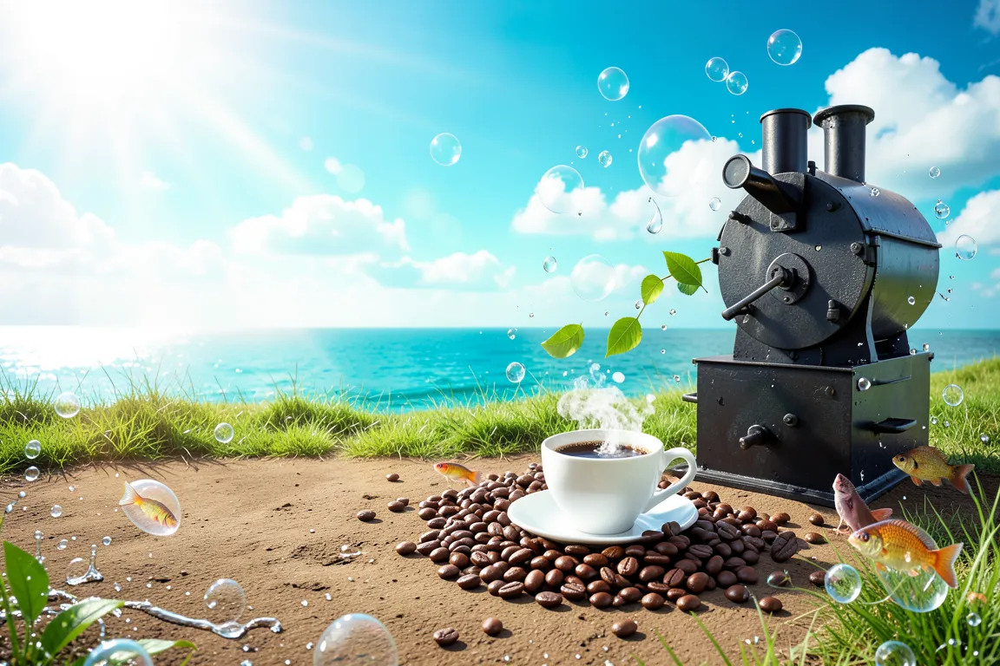

nett · 2004–2013 · også: Aero, Web 2.0-glans, Vista Aero, Skeuomorf natur og teknologi
Blanke glassknapper, gradienter i akva og gressgrønt, bilder av vann, himmel og bobler og en humanistisk sans-serif. Det vokste ut av Y2K-glansen og ble utseendet til Windows Vista, Mac OS X Aqua og Web 2.0 sent på 2000-tallet.

Kjerneidé
Teknologi hører til naturen og den menneskelige verden, så et digitalt grensesnitt skal se rent, blankt, levende og behagelig å ta på ut.
Designprinsipper
Bygg knapper og paneler som glass: en vertikal gradient, et hvitt høylys i øvre 50 % og en lys kant på 1px.
Bruk en gradient fra himmel til gress eller fra akva til grønt som hovedbakgrunn, med et lyshetsområde på 45 % til 95 %.
Legg naturbilder i utsnittet: vanndråper, bobler, blader, skyer, linseflimmer og blå himmel på 20 % til 60 % av heltefeltet.
Sett tekst i en humanistisk sans-serif som Frutiger eller Segoe på 14px til 16px, i mørk grå eller marineblå, aldri i ren svart.
Legg en refleksjon under heltegjenstander, ved 25 % dekning og 40 % av gjenstandens høyde.
Rund av hver beholder med en radius på 6px til 12px, og bruk full pilleform bare til primærknapper.
Bruk myke skygger med 8px til 20px uskarphet og en lys glød på 4px til 8px på interaktive elementer.